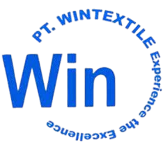
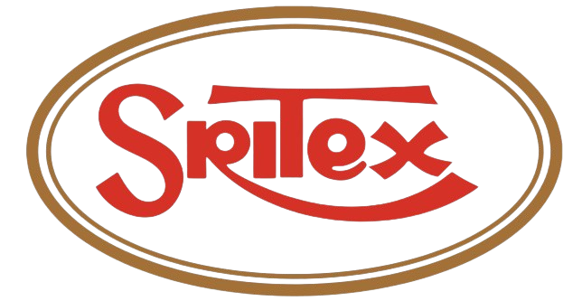
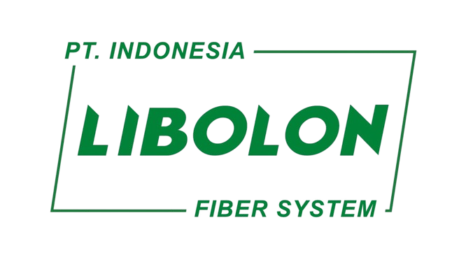
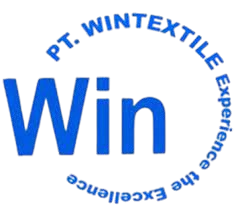
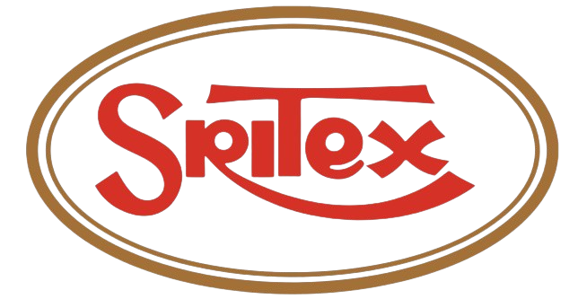
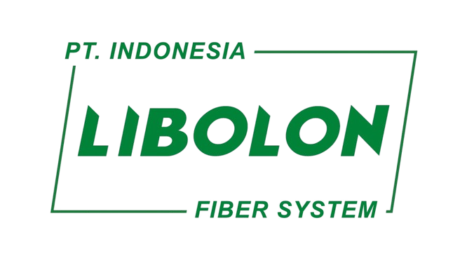

Perusahaan yang bergerak di bidang produksi benang ini didirikan pada tahun 2013. DTY (Drawn Textured Yarn) adalah jenis benang yang banyak digunakan, terutama untuk membuat kain rajut, kain tenun, dan berbagai produk pakaian jadi. DTY dibuat melalui proses pemintalan dan teksturisasi dari serat poliester, yang memberikan sifat elastis dan lembut pada benang.
Drawn Textured Yarn (DTY) adalah benang berkualitas tinggi yang dihasilkan dari serat poliester melalui proses pemintalan dan teksturisasi. DTY menawarkan elastisitas dan kelembutan yang ideal untuk berbagai aplikasi tekstil, termasuk kain rajut, kain tenun, dan pakaian jadi. Benang ini memiliki daya serap kelembapan yang baik dan ketahanan terhadap kusut, yang memudahkan perawatan dan meningkatkan kenyamanan. DTY juga tersedia dalam berbagai pilihan warna dan memiliki kekuatan material yang tinggi.

1. Loading (Persiapan)
2. Splicing (Penyambungan)
3. Treading (Proses awal penggulungan)
4. Dopping (Pengambilan benang)
5. Segregasi (Pemilihan)
6. Knitting (Rajut menjadi kain)
7. Packing (Pengepakan)
Customer dari perusahaan dty ini meliputi berbagai perusahaan yang bergerak dalam produksi tekstil, khususnya yang fokus pada pembuatan produk rajut atau tenun. Perusahaan tersebut mengandalkan benang Drawn Textured Yarn (DTY) untuk menghasilkan kain berkualitas tinggi yang dibutuhkan dalam berbagai jenis produk, mulai dari pakaian sehari-hari hingga produk tekstil rumah tangga.
 




